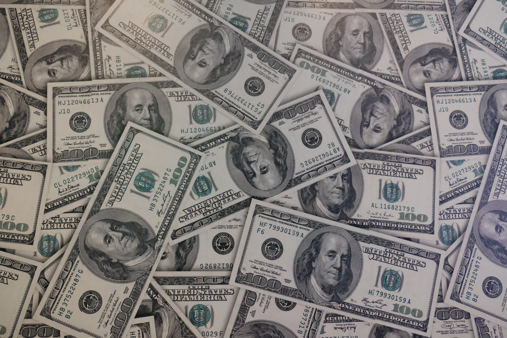

멩띠와 부자되기
현재 달러 소유자
- 멩띠
- 남궁
- 에일리언
- 환율정보
- 환율뉴스
- 외화투자정보
- 환차익/차손 계산

멩띠의 달러투자법
환율의 이상적 투자법은 달러 투자를 주식투자와 병행하는 것이다.
주가가 오를 때 주식을 팔아 달러를 사고, 달러가 오를 때 달러를 팔아 주식을 사는 행위를 반복하다 보면 '돈이 일하게 하라'는 조언을 누구보다 잘 실천할 수 있다.
보통 환율의 매수는 1,080원~1,090원 수준에서 진행하는 것이 바람직하며, 1,150원~1,200원 수준일 때 분할 매도하는 방향이 바람직하다.
환율의 등락 주기는 3년이므로 가장 낮은 저점에 환전하는 것이 유리하다.
현재 환율
날짜
투입 환율